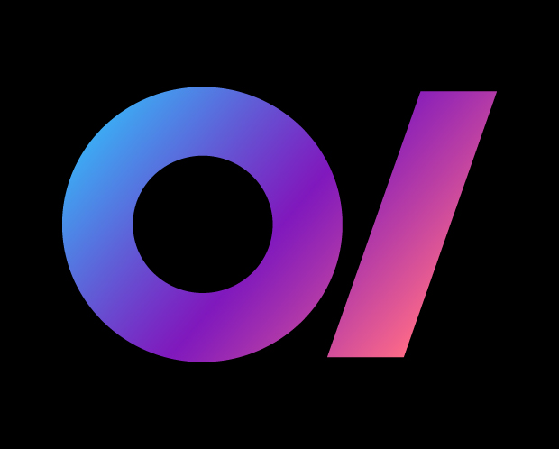

¡Bienvenido a OrionShop!
Descripción
OrionShop es una SPA desarrollada con webcomponents que simula una tienda virtual.
Funcionalidades del sitio
- Explora una amplia selección de productos
- Agrega artículos a tu carrito de compras
- Visualiza tu carrito de compras
- Elimina y agrega productos de tu carrito
- Almacena tu información de compra de forma local
Características
- Interfaz de usuario intuitiva y moderna
- Responsive design para una experiencia óptima en todos los dispositivos
- Persistencia de datos entre componentes y sesiones
- Desarrollo con webcomponents para una arquitectura modular y escalable